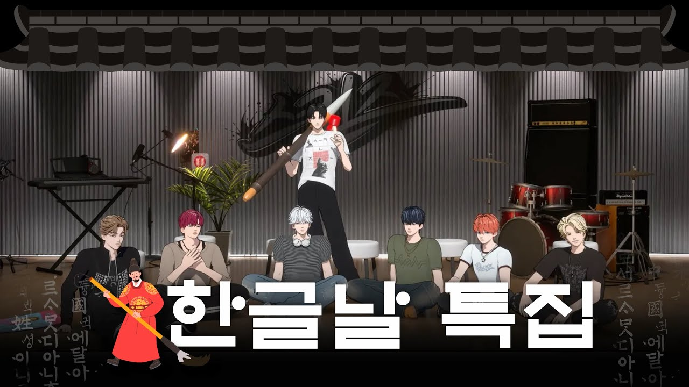

SKINZ分類：YOUTUBE · 發布日期：2025-10-08韓文日特輯｜禁止外語與外來語🚫從《訓民正音解例本》一口氣挑戰到黑手黨遊戲!🧐｜SKINZ 的韓文日大騷動SKINZ 字幕最後更新：2026-10-07在 YouTube 觀看原始影片×載入 YouTube 播放器 繁中韓文雙語字幕大小20%字幕位置 原先位置懸浮字幕全螢幕劇院模式繁體中文點播放後，字幕會顯示在這裡韓文 1010速度 0.75×1×1.25×1.5×2×00:00 / --:-- 分享這篇@fLINE𝕏 影片翻譯評分☆☆☆☆☆選擇 1～5 星展開雙語逐字稿 點擊查看完整內容雙語逐字稿雙語韓文繁中 自動跟隨播放文字大小 A−A＋重設字幕偏移（秒） 字幕比聲音早出現時填正數00:00:14아니 둘 다 오늘 설정이 아 아不是 你們兩個今天的設定 啊 啊00:00:17자 헬로 헬로 에브리원來 大家好 大家好00:00:21멋쟁이 신사 나가신다 30분 전에 왔는데 동생들 안 와서帥氣的紳士來了 我三十分鐘前就到了 但弟弟們還沒來00:00:27밥 먹고 왔더니 좀 늦었네 둘 셋 안녕하세요去吃個飯回來就有點晚了 二 三 大家好00:00:31스킨즈입니다 뒤에 보면 아시겠지만 저희가 평소와 좀我們是 SKINZ 看後面應該就知道 我們跟平常有點00:00:35다르죠 어不一樣吧 嗯00:00:37한글로 바뀌었네요 왓 10월 9일 한글날을 맞아서 다 같이換成韓文了耶 什麼? 為了迎接十月九日韓文日 我們一起00:00:41한글날 특집을 준비해 봤는데요 한글날은 뭐냐면 1446년準備了韓文日特輯 韓文日是什麼呢 就是紀念一四四六年00:00:46세종대왕님께서 백성들을 위해 만든 한국 고유의 문자 한글 한글을 만드신 날을世宗大王為百姓創造韓國獨有文字韓文 紀念他創造韓文的日子00:00:52기념하는 날입니다 한글의 소중함과 우리 글자를 아끼고 지켜 나가자就是紀念這件事的日子 珍惜韓文的可貴 一起愛護並守護我們的文字00:00:57이런 뜻이 담긴 그런 좋은 날이라고 합니다據說是蘊含這些意義的好日子00:01:00대박 박수 주세요太厲害了 請鼓掌!00:01:01네 오늘 하루 동안은 절대 외래어好 今天一整天 絕對不能用外來語00:01:06외국어 쓰지 않는 걸로 합시다 어 그러면 저희 진짜 막 짧은 오케이也不能用外語 那我們就連很短的 好啊00:01:11막 이런 영어 리액션도 안 돼요 절대這類英文反應也不行嗎? 絕對不行00:01:13그거 진짜 이지해요 이런 거 안 그럼 오늘 하루 동안 외래어 제일 많이那真的很簡單 這種也不行 那今天一整天用最多外來語的00:01:17쓴 사람은 멤버 한 명씩 칭찬하는 걸 올리는 거 어때요 녹음해서 올리는那個人 要逐一稱讚每位成員 然後上傳怎麼樣? 錄音後上傳00:01:22걸 녹음까지上傳 還要錄音啊00:01:23아 근데 나 칭찬 너무 하고 싶은데 나可是我好想稱讚大家喔 我00:01:25꼴등할 자신이 없네 다엘 형이나 핀이는 영어 이름인데 어卻沒把握拿最後一名 Dael 哥和 Finn 的名字都是英文耶00:01:31그러게요 그러면은 한국 이름을 정하는 걸로對耶 那就來取個韓文名字00:01:36핀부터 정해 보자 핀부터 이게 핀이 약간 그런 거잖아요 그 핀 바늘先幫 Finn 取吧 先從 Finn 開始 Finn 就是那種嘛 那個針 小針00:01:42바늘 우리 바늘이 우리 바늘이 바늘 아니면小針 我們的小針 我們的小針 不叫小針的話00:01:45뭐 송곳 아 그냥 한 글자 맞춰서 못 어那要叫什麼? 錐子 啊 就一樣取一個字 叫釘00:01:49못 괜찮다 바늘 이게 귀엽긴 해釘也不錯 小針確實比較可愛00:01:52그럼 바늘이로 하자고 바늘 바늘那就叫小針吧 小針 小針00:01:55바늘이 오늘 하루 바늘입니다 여러분小針 各位 今天我就叫小針00:01:57반갑습니다 도롱뇽 어때요 다리미很高興見到大家 蠑螈怎麼樣? 熨斗00:01:59도롱뇽 도롱뇽은 왜요蠑螈 為什麼是蠑螈?00:02:01다래끼 어때요 다래끼 다래끼 좋다 다래끼 좋다針眼怎麼樣? 針眼 針眼不錯 針眼不錯00:02:03그럼 저 이러고 있어야 돼요 다래끼那我就得一直這樣嗎? 針眼00:02:05다래끼 좋다 다래끼 괜찮은데針眼不錯 針眼滿好的耶00:02:07래끼 잠깐만眼 等一下00:02:10바늘이와 다래끼 형 좋은데 바늘 형이랑 다래끼 형으로小針和針眼哥 不錯耶 就決定叫小針哥和針眼哥00:02:16하겠습니다 안녕하세요 스킨즈의 오늘 한정就這樣決定 大家好 我是 SKINZ 只限今天的00:02:18다래끼입니다 너무 웃기다針眼 太好笑了00:02:21그러면 지금부터 시작하겠습니다 시작那現在就開始吧 開始!00:02:26한글날을 맞아서 저희가 또 여러 가지 놀이들을 준비를 했잖아요為了迎接韓文日 我們準備了各種遊戲嘛00:02:29아 놀이들 너무 좋습니다 네 몸풀기 놀이를 할 예정인데요啊 遊戲真不錯 接下來要玩暖身遊戲00:02:34이제 화면에 보이는 글자를 다 같이 돌아가면서大家要輪流把畫面上的文字00:02:38끊기지 않고 한 호흡에 정확한 발음으로 읽으면 된다고 합니다用正確的發音 一口氣不中斷地唸出來00:02:42다래끼 형부터 해 볼까요 좋습니다 아 조심해야겠네 이거要從針眼哥開始嗎? 好 啊 得小心了 這個00:02:46쉽지 않네 자 그러면 가 보시죠不簡單耶 那就來試試吧00:02:49시작 나랏말싸미 듕귁에 달아 문자와로 서로開始 我國的語言與中國不同 與文字彼此00:02:53사맛디 아니할쎄 이런 전차로 어린 백성이 니르고자 할 배 이셔도 마참내 제 뜻을 시러 펴디無法相通 因此 不識字的百姓即使有話想說 最後也無法將自己的意思表達00:03:04확실히 그 나이가 있어서 폐활량 폐활량의 어떤果然因為有點年紀 肺活量 肺活量的某種00:03:08시작 나랏말싸미 듕귁에 달아 문자開始 我國的語言與中國不同 文字00:03:11와로 서로 사맛디 아니할쎄 이런 전차로 어린 백성이 니르고자 할 배 이셔도與語言彼此無法相通 因此 不識字的百姓即使有話想說00:03:14마참내 제 뜻을 시러 펴디 못할 놈이 하니라 내 이를最後仍有很多人無法表達自己的意思 我對此00:03:26그렇게 눈 그렇게 뜨지 말 잘해 보겠습니다 파이팅 어 어不要那樣瞪眼睛 我會努力的 加油 嗯 嗯00:03:34나랏말싸미 듕귁에 달아 문자와로 서로 사맛디 아니할쎄 이런 전차로我國的語言與中國不同 與文字彼此無法相通 因此00:03:38어린 백성이 니르고자 할 배 이셔도 마참내 제 뜻을 시러 펴디 못할 놈이不識字的百姓即使有話想說 最後仍無法表達自己意思的人00:03:42하니라 그래도 귀여웠다很多 不過還是很可愛00:03:47괜찮았다 나랏말싸미 듕귁에 달아 문자와로 서로還不錯 我國的語言與中國不同 與文字彼此00:03:50사맛 이런 전차로 어린 백성이 니르고자 할 배 이셔도 마참내 제 뜻을 시러 펴디 못할相通 因此 不識字的百姓即使有話想說 最後仍無法表達自己意思的00:03:56놈이 하니라 내 이를 위하야 어엿비 너겨 새로 스물여덟 자를 맹가노니人很多 我因此深感憐憫 新創了二十八個字00:04:01사람마다 하여 수비 니겨 날로 쓰메 편안케 하고자 할 따름只希望人人都能容易學會 日常使用時能夠方便00:04:07뭐야 야 근데 숨 왜 이렇게什麼啊 可是你的呼吸怎麼這麼00:04:10나랏말싸미 듕귁에 달아 문자와로 서로 사맛디 아니할쎄 이런 전차로 어린我國的語言與中國不同 與文字彼此無法相通 因此 不識字的00:04:15백성이 니르고자 할 배 이셔도 마참내 제 뜻을 시러 펴디 못할 놈이 하니라 내百姓即使有話想說 最後仍有很多人無法表達自己的意思 我00:04:30나랏말싸미 듕귁에 달아 문자와로 서로 사맛디 아니할我國的語言與中國不同 與文字彼此無法相通00:04:34아 나랏말싸미 듕귁에 달아 문자와啊 我國的語言與中國不同 與文字00:04:38서로 사맛 이런 전차로 어린 백성이 니르고자彼此相通 因此 不識字的百姓想要說00:04:42할 배 이셔도 마참내 제 뜻을 시러 펴디 못할 놈이 하니라 내 이를 위하야即使有話想說 最後仍有很多人無法表達自己的意思 我因此00:04:48새로 스물여덟 자를 맹가노니 사람마다 하여 수비 니겨 날로 쓰메新創了二十八個字 讓人人都能容易學會 日常使用時00:04:53편안케 하고자 할 따름이니라 어只希望能夠方便 嗯00:05:03일부입니다 어一部分 嗯00:05:04너무 유명하죠 네 세종대왕님이 한글을 만든 이유에很有名吧 對 這段是在說明世宗大王創造韓文的理由00:05:09대해서 설명한 부분이고 간단히 내용을 설명하자면 백성이 쉽게 배우고 쓸 수簡單解釋內容 就是宣告創造了讓百姓容易學習和使用的00:05:14있는 한글을 만들었다는 선언 한글 창제의 정신韓文 這份宣言展現了創造韓文的精神00:05:18그걸 보여주는 가장 유명한 구절이라고 합니다據說是最能展現這份精神的著名段落00:05:20어 근데 진짜 덕분에 너무 편한 거嗯 不過真的多虧有韓文才這麼方便00:05:22같아 맞아 진짜 한글 없었으면 그래 전 세계적으로 인정받고真的 對啊 如果沒有韓文的話 是啊 韓文在全世界都受到肯定00:05:26있잖아 세종대왕님께 저희 인사 한번 드리고不是嗎? 我們先向世宗大王致意00:05:30제대로 한번 시작해 볼까요 너무 좋습니다再正式開始吧? 太好了00:05:32네 세종대왕님 감사합니다好 世宗大王 謝謝您00:05:34감사합니다 이름을 딱 말한 사람 먼저 정답을謝謝您 先喊出自己名字的人 可以先回答00:05:39맞히도록 하겠습니다 좋아요 첫 번째 주제는 음식來猜正確答案 好 第一個主題是食物00:05:45권이랑 다래끼 아 늦었어요Ilang Kwon 針眼 啊 你慢了一步00:05:48권이랑 어Ilang Kwon 嗯00:05:49두부 알탕 어 에이 억지스러워豆腐魚卵湯 啊 欸 太牽強了啦00:05:54두부와豆腐和00:06:03사람으로서 닭볶음탕 아以懂料理的人的身分來回答 辣燉雞 啊00:06:07아 이거는 너무 쉬운데 다래끼 다래끼啊 這個太簡單了吧 針眼 針眼00:06:10아 양보할게 율啊 我讓你 Yull00:06:12제육밥 와辣炒豬肉飯 哇00:06:15김치 김치사발면 아 가자미식해 초계탕泡菜 泡菜碗麵 啊 發酵比目魚 涼雞湯00:06:19도토리묵 순대국밥橡實涼粉 血腸湯飯00:06:21와 와 왜 이렇게 잘해哇 哇 怎麼這麼厲害?00:06:23낙지탕탕이 짬뽕수제비剁章魚 辣海鮮麵疙瘩00:06:26와 그런 게 있어哇 有這種東西嗎?00:06:27첫 번째 주제 이제 점수 합산은요第一個主題 現在來加總分數00:06:32어 어嗯 嗯00:06:35영어 사용하셨습니다 다래끼你用了英文 針眼00:06:37다래끼 두 개 도빈 두 개 다래끼 두 개는針眼兩題 Dovin 兩題 針眼兩題是00:06:45그러니까 한 개 바늘 두 개所以 一題 小針兩題00:06:491등은 율 씨 축하드립니다 압도적으로 1등입니다第一名是 Yull 恭喜! 是壓倒性的第一名00:06:52예 첫 번째 주제는 율이가 1등하고 있어요對 第一個主題由 Yull 暫居第一00:06:55어 뭐냐 다래끼嗯 什麼啊 針眼00:06:56어떻게 알아 결심 뭐 뭐라你怎麼知道? 決心 什麼? 你說什麼?00:07:01정답 아 권이랑 엽기적인 그녀答對 啊 Ilang Kwon 我的野蠻女友00:07:04와 와哇 哇00:07:09지우개 슬기로운 의사생활橡皮擦 機智醫生生活00:07:10이상한 변호사 우영우 아非常律師禹英禑 啊00:07:12와 참나 얼마나 TV를 더 많이 보냐哇 真是的 到底看了多少電視啊?00:07:24바늘 네小針 好00:07:26빅뱅 하루하루 외래어 사용하셨습니다 아BIGBANG 的 Haru Haru 你用了外來語 啊00:07:30잠깐만 이럴 때 어떻게 해야 되냐等一下 這時候該怎麼辦啊?00:07:32아 이거 어떻게 해야 돼啊 這個要怎麼說?00:07:32잔나비 선배님의 잔나비 선배님의 뜨거운 여름밤은 가고JANNABI 前輩的 JANNABI 前輩的 炎熱的夏夜過去了00:07:39남은 건 볼품 와留下的卻不怎麼樣 哇00:07:45다래끼 뜨거운 여름밤은 가고 남은 건 볼품針眼 炎熱的夏夜過去了 留下的卻不怎麼樣00:07:51없지만 아 없지만雖然不怎麼樣 啊 雖然不怎麼樣00:07:53김광석 선배님의 어느 60대 노부부 이야기 백지영 선배님의 잊지 말아요金光石前輩的 一對六十多歲老夫婦的故事 白智榮前輩的 別忘了我00:07:57와 초성 맞히기 1등은요哇 猜字首遊戲的第一名是00:08:00두구두구두구두구 도빈입니다咚咚咚咚 是 Dovin!00:08:05너무 압도적으로 1등을 해 가지고 분명 뒤에서 뭐 따로 대본을 받지他拿第一名的優勢太大了 肯定私下另外拿到了什麼劇本00:08:09않았나 자 그러면 제가 1등 선물을 직접是不是啊? 那我就親自去把第一名的禮物00:08:13가져오도록 야拿過來 喂00:08:15좋았어太好了!00:08:18새로 나온 휴대폰일까 어 귀여워會是新出的手機嗎? 哦 好可愛00:08:21어떤 거요 어 휴대 뭐什麼啊? 嗯 手機 什麼00:08:23휴 근데 진짜 무섭다 네가 이렇게手 不過真的好可怕 你這樣00:08:27보니까 그래서 준비했습니다 와 와看著我 所以我們準備了這個 哇 哇00:08:33선물인데 웃으셔야죠 웃으셔야죠 선물인데 웃으셔야죠 너무 너무 좋은這是禮物 要笑啊 要笑啊 這是禮物 要笑啊 真的是非常非常好的00:08:39선물이다 아 진짜 너무 감사합니다禮物 啊 真的非常謝謝00:08:43놀이 속담 문제 주세요 바늘 배보다 배꼽이 크다遊戲 請出諺語題 小針 肚臍比肚子還大00:08:50근데 건의할 게 하나 있습니다 얘 그냥 말을 안 하는데 이거不過我有一件事想建議 他都不說話耶 這個00:08:54어떻게 해야 되는 건가 조치해 주세요該怎麼辦啊? 請處理一下00:09:01아니라 아 내 이름 부르기 너무 어렵다不是 啊 我的名字好難喊00:09:09땡 아니 와 진짜 너무 많아答錯 不是 哇 真的太多了00:09:18아 혀가 기네 어啊 舌頭真長 嗯00:09:21재온이 형 몇 개 맞혔지 나 많이 맞혔어 나Jaon 哥答對幾題了? 我答對很多題 我00:09:25다섯 개인가요 네 개인가요 숭늉五題嗎? 四題嗎? 鍋巴茶00:09:29찾는다 그런 게找鍋巴茶 有這種00:09:31있어 무슨 뜻이 그래 나 너한테 양보해 줬다說法嗎? 是什麼意思? 對 我讓給你了00:09:34숭늉을 왜 우물 가서 찾아요 그거 무슨 뜻인지 알려주시면 안為什麼去井邊找鍋巴茶啊? 能不能告訴我那是什麼意思?00:09:36돼요 그러니까 그可以嗎? 就是那個00:09:37엄한 데서 엄한 그 뭐 그런 거在不對的地方 在不對的那個地方 之類的00:09:39뭐 허황된 꿈을 꾼다 약간 이런 그러니까 바늘 찾으려면 바늘집을 가야就是作不切實際的夢之類的 所以想找針的話 就該去針的家00:09:43되는데 막 태오 집 가 가지고 막 바늘 근데 있을 것 같은데요卻跑去 Theo 家找針 可是感覺他家會有耶00:09:47아 그러네 집에 바늘 있지 않아요 있을 수도 있겠다啊 對耶 家裡不是會有針嗎? 好像也可能有00:09:51바늘인가요 다엘是小針嗎? Dael00:09:56다엘 마이너스 1점입니다 네 태오Dael 扣一分 好 Theo00:09:59오 비 온 뒤에 땅이 굳는다哦 下過雨後 土地會變得更堅實00:10:02야 근데 이거 이름 다른 사람 좀喂 可是這個名字 要不要換別人00:10:04부르나 자꾸 이게 생각이 안 나 근데 옆에서 옆에서 계속 그걸로來喊啊? 我一直想不起來 可是旁邊 旁邊一直拿這件事00:10:10궁시렁대고 근데 아碎碎唸 可是 啊00:10:12근데 이제 어쩔 수가 없어요 오늘은 한글날이기 때문에可是這也沒辦法 因為今天是韓文日00:10:15그렇죠 좋으시겠습니다 여러분들沒錯 各位應該很開心吧00:10:17정답 아 권이랑 볕 들 날이 온다 볕 들 날이 있다 숨고 싶어라回答 啊 Ilang Kwon 陽光照進來的日子會到來 有陽光照進來的一天 好想躲起來00:10:24쥐구멍에도 볕 들 날이 있다 네 아 잘한다 진짜 잘한다老鼠洞也會有陽光照進來的一天 對 啊 好厲害 真的好厲害00:10:30선생님 까다로우시다 역시 최고老師真嚴格 果然是年紀最00:10:32령자 쉽지 않습니다 역시 최고령자 누구예요大的 不簡單 果然年紀最大的厲害 是誰啊?00:10:34다음 하룻강아지 범 무서운 줄 모른다下一題 初生的小狗不知道老虎可怕00:10:37하룻강아지 한번 보여 주실래요 하룻강아지可以讓我們看看初生的小狗嗎? 初生的小狗00:10:44귀여워 속담 맞히기 놀이 1등은 누구죠 바로好可愛 猜諺語遊戲的第一名是誰呢? 就是00:10:48다래끼 형입니다針眼哥!00:10:51축하드립니다 최고령恭喜! 年紀最大00:10:54최고령 최고年紀最大 最棒00:10:56잠깐 하지 마 하지 마 하지 마 나 괜찮은 것 같아等一下 不要 不要 不要 我覺得我這樣就好了00:10:59하나 둘 셋 짠 우와一 二 三 鏘! 哇!00:11:08시간이에요 사진 한 장 찍어 보시죠到時間了 拍張照片吧00:11:11앞에 앞에 보셔야죠 앞에 앞에 보셔야죠 앞에 괜찮으시죠前面 要看前面啊 前面 要看前面啊 前面 還好吧?00:11:14왜냐면은 이게 되게 귀여워 가지고 그 뭐냐 형因為這個很可愛 那個 哥00:11:22네 좋습니다 노래 관련된 놀이가 준비가好 很好 接下來準備了跟歌曲有關的遊戲00:11:25되어 있다고 하는데요 저희가 또 이제 노래 가사만 보고 어떤 선배님의我們要只看歌詞 猜是哪位前輩的00:11:29어떤 노래인지 아哪一首歌 啊00:11:31맞히기 띄어쓰기가 하나도 되어 있지 않은來猜歌詞 沒有任何空格的00:11:34아 네 가사를 보고 맞혀야 된다고 합니다啊 好 我們要看著歌詞猜答案00:11:37연습 문제 주세요請出練習題00:11:42아 이건 쉽죠 널 생각해야啊 這個很簡單 是 想著你00:11:46그래 널 생각해對 想著你00:11:57한 번 더 기회 선배님의 널 생각해입니다是再一次機會前輩的 想著你00:12:02이제 본 게임 아 본 뭐라고요 본놀이 본놀이라고 하신 거죠現在正式遊戲 啊 正式什麼? 正式玩耍 你說的是正式玩耍吧?00:12:06본놀이 본놀이 자 그럼 갑니다正式玩耍 正式玩耍 好 那開始囉00:12:08포기할게요 렛츠 고 어我放棄 我們走吧 嗯00:12:12이게 뭐지這是什麼啊?00:12:14도빈 이게 뭐지 윤하 선배님의 사건의 지평선Dovin 這是什麼啊? Younha 前輩的 事件視界00:12:21마법 눈깔을 쓰고 보시게戴上魔法眼珠來看吧00:12:26눈깔이요 그러니까 마법 눈알眼珠? 就是魔法眼球00:12:29마법 눈알을 쓰면서 저거를 재온戴上魔法眼球來看那個 Jaon00:12:38잠깐만요 아 10等一下 啊 十00:12:4510cm 선배님의 스토커입니다 아是 10cm 前輩的 Stalker 啊00:12:48지금까지 연습 놀이였던 거죠 아 아니요剛剛都還是練習遊戲吧? 啊 不是00:12:51본 게임이었 예是正式遊戲 對00:12:58아 나 이거 아는데 아이유 선배님의啊 這個我知道 是 IU 前輩的00:13:05땡 아이고答錯 哎呀00:13:12아 맞아 이거였어요 역시 멋있다啊 對 是這首 果然很帥00:13:17어 바늘嗯 小針00:13:18아 이거 너무 바늘啊 這個太 小針00:13:20악동 음악가 선배님의樂童音樂家前輩的00:13:25권이랑 권이랑Ilang Kwon Ilang Kwon00:13:26어떻게 이별까지 사랑하겠어 땡 권이랑怎麼連離別都愛上 答錯 Ilang Kwon00:13:29악동뮤지션 선배님들의 어떻게 이별까지 사랑하겠어 널 사랑하는AKMU 前輩的 怎麼連離別都愛上 我愛的是00:13:34거지 아你 啊00:13:35정답 거기까지야 우와答對 要答到那裡啊? 哇00:13:38마법 눈깔 이렇게 노래 맞히기魔法眼珠 就這樣 猜歌遊戲00:13:43벌써 끝났나요 끝났습니다 아已經結束了嗎? 結束了 啊00:13:50저희 상품은 제가 증정을 할게요 제 사촌這個獎品 我要送給別人 有個朋友比我表弟00:13:55동생보다 한글 연습이 더 필요해 보이는 친구가 있어 가지고看起來更需要練習韓文00:14:01하겠습니다 예一起送給他 好00:14:04많이 공부하시고 네好好學習吧 好00:14:05어 이왕嗯 既然00:14:09축하드립니다 와 진짜 부럽다恭喜! 哇 真的好羨慕00:14:13이번 상품은 진짜 기대하셔도 됩니다 진짜로 한우면 진짜 부럽겠다這次的獎品真的值得期待 真的 如果是韓牛我就真的羨慕了00:14:17아 진짜 한우면 진짜 좋겠다 저희랑 다 같이 먹을 건가요 만약에啊 真的是韓牛就太好了 要跟我們一起吃嗎? 如果00:14:20한우면 예是韓牛的話 對00:14:33아니 와 뒤에 스킨즈를 율이가 쓰신 거예요不是 哇 後面的 SKINZ 是 Yull 寫的嗎?00:14:37제가 직접 이걸로 이렇게 샥샥샥 해 가지고 썼죠是我親自拿這個 這樣刷刷刷寫出來的00:14:44이런 붓 약간 세상에 이런 일이 이런 데서 본 것 같은데這種毛筆 感覺好像在 世上竟有這種事 這類節目看過00:14:47자기 머리카락으로 붓 만드신 맞아 유명한 아티스트用自己的頭髮做毛筆的 對 很有名的藝術家00:14:51어 멋있다 이건 좀 탐난다 그래서 이걸 어디다 쓰냐 그다음哦 好帥 這個有點想要 所以這個要用在哪裡呢? 下一個00:14:54게임 벌칙으로 아 잠깐만遊戲的懲罰 啊 等一下00:14:58아닌가 아니요 어不是嗎? 不是 嗯00:15:01와 어 붕붕거려 아니면 이거 이렇게 써도 된다哇 嗯 嗡嗡的 不然這個也可以這樣用00:15:05더러운 거 있으면 이렇게 빗자루처럼有髒東西的話 就這樣當掃把用00:15:07네 와對 哇00:15:09와 강에 강에 빠지면 이제 이걸로 노 저어 가지고哇 如果掉進河裡 河裡 就可以用這個划槳00:15:13와 진짜 하나 더 하나 더 어哇 真的 再一個 再一個 嗯00:15:17이게 창던지기 할 때도 그냥 우와這個丟標槍的時候也能用 哇00:15:20그다음에 그 그다음에接下來 那個 接下來00:15:23이렇게 우리 그때 스케치 스케치 하기 했잖아 스케치할 때도 이거 할 수像這樣 我們那時候不是有畫素描 畫素描嗎? 畫素描時也可以用這個00:15:28있잖아 와也能用嘛 哇00:15:30진짜 유용한 겁니다 어 그다음에真的很實用 嗯 接下來00:15:35심리를 굉장히 이제 음會很大量地運用心理 嗯00:15:37이용하는 그런 놀이인데 조직폭력배 조직폭력是運用心理的遊戲 黑幫 黑幫?00:15:42유명 유명 조직폭력배 아 그거구나 아 나 지금까지有名的 有名的黑幫 啊 原來是那個 啊 我到現在才00:15:46무슨 게임 무슨 놀이인가 했네 유명 폭력 조직 놀이知道是什麼遊戲 什麼玩法 有名的黑幫遊戲00:15:50시민들 구하고 예 예要救市民 對 對00:15:52태오 형이 한번 시원하게 얘기해 주세요Theo 哥 你直接爽快地說出來吧00:15:54마피아 게임 어黑手黨遊戲 嗯00:15:58일단 첫 판은 사회자를 제가 보도록 하겠습니다第一局就由我來當主持人00:16:02좋습니다 그럼 시작을 해 보시죠好 那就開始吧00:16:03의자를 살짝 치워 볼까요 밤이 됐습니다 여러분 고개를 숙여 주세요要不要稍微把椅子移開? 天黑了 各位請低頭00:16:08도둑을 고르겠습니다我要選小偷了00:16:13자 도둑들은 서로를 확인해 주세요好 小偷們請互相確認身分00:16:19다음은 의사 고르겠습니다 낮이 되었습니다 우와接下來選醫生 天亮了 哇!00:16:31벌써 이상해 시민 태오라고 합니다已經怪怪的了 我是市民 Theo00:16:32시민이라고 하겠지 안녕하세요 선량한 바늘입니다當然會說自己是市民啊 大家好 我是善良的小針00:16:37저는 넌 뭔데我是 你是什麼身分?00:16:39너 뭔데 래퍼 지망생你是什麼身分? 想當饒舌歌手的人00:16:42아니 권이랑입니다 이게 쇼미더머니 12 지원자不是 我是 Ilang Kwon 這是 Show Me the Money 12 的參賽者00:16:50근데 저거 목걸이 훔치신 거 아닌가요不過你那條項鍊不是偷來的嗎?00:16:52이거요 도둑這個嗎? 小偷00:16:53이거 누구한테 훔쳤어요 목걸이인데 고등학생 율이입니다這個是跟誰偷的? 這是項鍊 我是高中生 Yull00:16:57너 도둑이구나 얼마 전까지 공부를 마치고 이번에 첫原來你是小偷啊 我前陣子剛完成學業 這次第一次00:17:02의사직을 맡게 된 의사 의사라고 의사인 사람擔任醫生的醫生 你說你是醫生? 是醫生的人00:17:06자 의사인 사람 있어요 하나 둘 셋來 有人是醫生嗎? 一 二 三00:17:09어 의사는 한 명입니다嗯 醫生只有一位00:17:12저희 둘 중에 무조건 한 명은 도둑이지 않을까요我們兩個之中 一定有一個是小偷吧?00:17:15그러면 투표하시죠 근데 벌써요 무슨 벌써那就投票吧 可是 現在就投嗎? 什麼叫現在就投?00:17:18아니 잠시만 야 잠깐만 잠깐만 마음이 급한不是 等一下 喂 等一下 等一下 看你這麼心急00:17:20거 보니까 어 다 죽여라고 하시는 게 완전히 도둑인데還說要把大家都殺掉 完全就是小偷吧00:17:23아니 근데 중요한 게 지금 의사가 두 명이야 말이 안 돼 누가 거짓말不是 但重點是現在有兩個醫生嗎? 這不合理 有人在說謊00:17:27치고 있는 거 제가 아는 재온이는 시민이어도 관심 받고 싶어 가지고是誰在說謊? 以我認識的 Jaon 來說 他就算是市民 也會想引起注意00:17:31그건 맞아 그건 맞아 밤이 되었습니다這倒是真的 這倒是真的 天黑了00:17:34네 두구두구 하세요好 請咚咚咚00:17:37누구를 죽이실 건가요你們要殺誰?00:17:44의사는 일어나 주세요 누가 죽을 것 같나요醫生請抬頭 你覺得誰會死?00:17:48아침이 되었습니다 아 재온이 너무 이상하네 아天亮了 啊 Jaon 真的很奇怪 啊00:17:52여러분 어젯밤 어젯밤各位 昨晚 昨晚00:17:55어젯밤 아 진짜 재밌다 너무 재밌어昨晚 啊 真的好好玩 太好玩了00:17:59아무도 죽지 않았어 어沒有人死 嗯00:18:03너 의사 아니지 아 잠깐 나 의사 아니에요你不是醫生吧? 啊 等一下 我不是醫生00:18:06근데 나도 의사 아니야 어可是我也不是醫生 嗯00:18:09진짜 의사는 의사인 걸 밝히면 위험하지 위험하지真的醫生如果公開自己的醫生身分 就危險了 很危險00:18:12그럼 진짜 큰일 나요 왜 근데 그냥 자기가 밝히고 자기那樣真的會出事啊 為什麼? 可是只要公開身分 然後自己00:18:15이렇게 계속 찍으면 근데 자기 계속 찍는像這樣一直選自己就好 可是一直選自己00:18:18왜 거짓말하냐 관심 받고 싶어서 그랬다為什麼要說謊啊? 因為想引起注意才這樣00:18:26하나 둘 셋 너야 율이 일단 변론을 할게요 변론一 二 三 就是你 Yull 我先辯護一下 辯護00:18:31최후의 변론 변론 들어 보자最後的辯護 聽聽你的辯護吧00:18:33일단은 저는 선량한 고등학생이고요 걸렸다 싶을 거야首先 我是善良的高中生 他應該覺得自己被抓到了00:18:41조금 더 길게 생각을 해 봐야 된다 일단 대화를 너무 많이 안 했고應該再多想一下 首先我們還沒聊多少00:18:48되기 때문에 네 하나 둘 셋因為不能這樣死掉 好 一 二 三00:18:50살려 아직도放過他 還是00:18:51살려 아 좋습니다放過他 啊 好00:18:56바로 밤이구나 자 마피아분들은 일어나 주세요馬上就天黑了啊 好 黑手黨請抬頭00:19:01주세요請吧00:19:06아침이 되었습니다 아天亮了 啊00:19:15간다 아 야 진짜 장난치지 말고來了 啊 喂 真的別鬧了00:19:18아 어머 어머 어머 어啊 天啊 天啊 天啊 嗯00:19:22지금 죽은 사람은 시민인 거죠 어現在死掉的人是市民吧? 嗯00:19:26좀 의견을 모아야 돼 그러니까 아까 말을 너무 안 했다니까得整合一下大家的意見 所以我就說剛剛聊得太少了00:19:37도빈이 형이 뭔가 다엘 형 찍을 것 같아 가지고因為我覺得 Dovin 哥好像會投 Dael 哥00:19:39일단 나는 태오는 확정이고 얘는 아니다首先我覺得 Theo 已經確定了 這個人不是00:19:43근데 얘는 무조건 아니 진짜 얘 무조건 아니야可是他絕對不是 真的 他絕對不是00:19:45내가 근데 왜 확정 태오可是為什麼我就確定了? Theo00:19:47아니야 쟤는 딱 그 솔직히 태오는 연기를 그렇게 잘하지 못해不是 他就是那個 老實說 Theo 沒那麼會演00:19:51근데 제가 도둑일 수 있어요 없어可是我也可能是小偷啊 不可能00:19:53아니야 너무 없어 너라면 네가 사회자라면 너 도둑 줬을不是 完全不可能 換作是你 如果你是主持人 會把小偷的身分00:19:56것 같아 안 줬을 것 같아給你自己嗎? 還是不會?00:19:57아니 도둑이 두 명이면 어떨 것 같아不是 如果有兩個小偷的話呢?00:19:59안 줬을 것 같아 이게 무슨我覺得不會給 這是在說什麼00:20:00투표 죽여 이거 무조건 죽이고 가야 돼投票 要殺嗎? 這個一定要殺一個才能繼續00:20:02둘 왜 셋二 為什麼? 三00:20:04오 이러면 어떡해요 그럼 다시 해요哦 這樣怎麼辦? 那就再投一次00:20:06하나 둘 셋一 二 三00:20:08최악이다 와 또 갈렸어糟透了 哇 又分票了00:20:11율이에요 마피아 같은 거예요 형은是 Yull 哥是黑手黨那一類的嗎?00:20:14어 좀 아 갑자기 또嗯 有點 啊 突然又00:20:16자 마지막이에요 마지막 바로 합시다好 最後一次 最後一次 馬上來吧00:20:20하나 둘 셋 좋아요一 二 三 好00:20:22살았네 오케이 네 네 시민을 살리셨습니다活下來了 好 對 對 你們救了市民00:20:25아침이 됐습니다 제발 제발 살아야 돼天亮了 拜託 拜託 一定要活下來00:20:27아 진짜 나 너무 무섭다 이리로 가는 거면 돌아가야 돼啊 我真的好害怕 如果要往這裡走就回去00:20:30그가 움직인다 진짜 충격이다 충격他動了 真的太震驚了 震驚00:20:35봐 봐 나야 빨리 해你看 是我 快一點00:20:36아 죽었어 끝났어啊 死了 結束了00:20:39게임 끝났지 죽은 두 명이 시민이면 게임遊戲結束了吧 如果死掉的兩個人都是市民 遊戲00:20:41끝이에요 끝이지就結束了 結束了吧00:20:42그렇네 게임이 끝났습니다對耶 遊戲結束了00:20:44그러니까 아니라니까 마피아분들은 일어나所以我就說不是啊 黑手黨請起來00:20:47아니 마피아 같더라 그래 아不是 我就覺得像黑手黨 對 啊00:20:50아 얘 죽였어야 했어 잘한다니까啊 應該殺掉他的 我就說他很會玩00:20:55나 이제 이 친구 안 믿으려고 왜我以後不打算相信這傢伙了 為什麼?00:20:59너무 연기를 잘해 근데 진짜 우리가 모두가 다 똑같은他太會演了 不過我們大家都一致認為00:21:03건 재온이는 아니었다는 거는 처음부터 끝까지Jaon 不是 從頭到尾都這麼認為00:21:07자 그러면 저희 도둑 잡기 놀이도 여기까지 했고요 네好 那我們的抓小偷遊戲也玩到這裡了 對00:21:11오늘 방송의 하이라이트죠 결국 오늘 외래어를 가장 많이 쓴今天節目的重頭戲 最後 今天用最多外來語的00:21:18사람은 누구인가人到底是誰呢?00:21:2130 30회가 넘는다고 합니다 율이가 30회三十 據說超過三十次 Yull 三十次00:21:24오케이 오케이 내일부터 멤버 한 명 한 명씩好 好 從明天開始 逐一稱讚每位成員00:21:27칭찬하는 보이스 티저를 이제 녹음해서 올리는 걸로 하시죠錄製稱讚大家的語音預告 然後上傳吧00:21:30한글날 특집으로 저희가 준비한 오늘我們為韓文日特輯準備的今天00:21:33내용은 여기까지입니다 네 다음 영상도 더 재미있게內容就到這裡 好 下一部影片我們也會帶著更有趣的內容00:21:37돌아오도록 하겠습니다 그럼 지금까지 스킨즈였습니다回來見大家 那麼 以上是 SKINZ其他語音紀錄WE GO-6出道大作戰 LIVE EP.4 預告：泰岡PD的計謀發布日期：2026-10-07WE GO-6 · YOUTUBEWE GO-6›KUTA 스스 的Space直播日期：2026-10-06WE GO-6 · WEGO-6 스스WE GO-6›時雨 스스 的Space直播日期：2026-10-05WE GO-6 · WEGO-6 스스WE GO-6›WE GO-6 出道宣傳大作戰 #3直播日期：2026-10-04WE GO-6 · YOUTUBEWE GO-6›